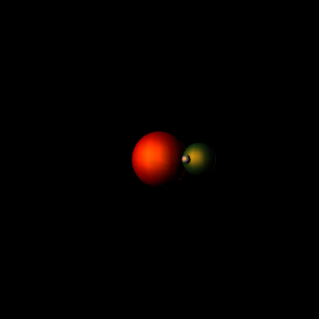

This demo tests some lighting functions I added to Processing.js such as lightSpecular(), pointLight() and shininess().
The static image on the right is a screenshot of the exact same sketch run in Processing.

// Demo written by Andor Salga
import processing.opengl.*;
float rotEarth = 0.0;
float rotMoon = 0.0;
void setup(){
size(400,400,OPENGL);
noStroke();
}
void draw()
{
background(0);
lightSpecular(255,255,255);
pointLight(200,200,200,0,100,400);
specular(204, 102, 0);
shininess(8.0);
// push matrix to center of the viewport
pushMatrix();
translate(width/2, height/2, 150);
// draw the sun
fill(255,0,0);
sphere(20.0);
// push on another matrix and rotate and trans
pushMatrix();
rotateY(rotEarth += 0.01);
translate(0,0,40);
fill(25,70,20);
sphereDetail(16);
sphere(10);
pushMatrix();
rotateY(rotMoon += 0.08);
translate(0,0,14);
fill(128,128,128);
sphere(2.5);
popMatrix();
popMatrix();
popMatrix();
}